BMW
1. Създаване на BMW
BMW (Bayerische Motoren Werke AG) е основана на 7 март 1916 г. в Мюнхен, Германия. Първоначално компанията произвежда авиационни двигатели за самолети. След Първата световна война започва да произвежда мотоциклети, а през 1928 г. навлиза в автомобилната индустрия. С течение на времето BMW се превръща в един от водещите световни производители на луксозни и спортни автомобили, известен с високото качество, иновативните технологии и отличните си характеристики.
2. Двигател
Двигателят е най-важната част на всеки автомобил. Независимо дали е бензинов или дизелов, правилната поддръжка определя колко надежден ще бъде. Смяната на маслото трябва да се извършва по-често от официалните интервали – на около 8 000–10 000 км или веднъж годишно. Използването на качествено масло и оригинален маслен филтър значително намалява износването на двигателя. Важно е редовно да се проверяват нивото на маслото, охладителната течност и наличието на течове. При необичаен шум, загуба на мощност, прекомерен дим или висока температура трябва да се направи диагностика възможно най-скоро. При по-старите BMW често се срещат проблеми с гарнитурата на капака на клапаните, веригата (при някои двигатели), вакуумни маркучи, дебитомера и EGR системата. Навременното обслужване може да предотврати много по-скъпи ремонти.
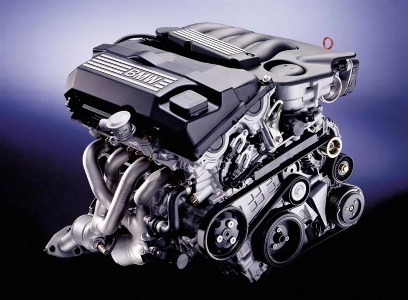

3. Скоростна кутия и трансмисия
Скоростната кутия предава мощността от двигателя към колелата. Тя може да бъде ръчна или автоматична. При ръчните кутии трябва да се следи състоянието на съединителя, маховика и лагерите. При автоматичните е важно редовно да се сменя маслото, въпреки че някои производители го определят като "доживотно". Симптоми за проблем са трудно превключване, шумове, вибрации, приплъзване или удари при смяна на предавките. Карданът, диференциалът и полуоските също трябва да се проверяват за луфтове и течове. Добре поддържаната трансмисия може да издържи стотици хиляди километри без основен ремонт.
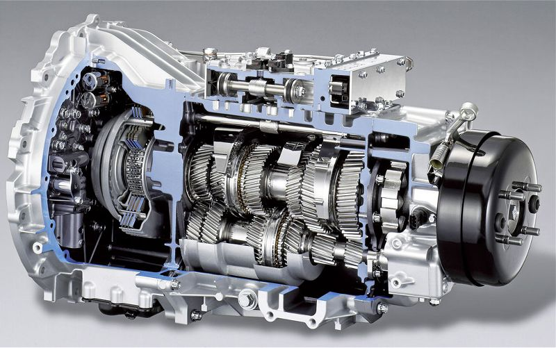
.jfif)
4. Окачване и управление
BMW е известно с отличното си управление. За да се запази това качество, всички компоненти на окачването трябва да бъдат в добро състояние. Проверяват се носачи, шарнири, биалетки, тампони, амортисьори, пружини и кормилни накрайници. Износените части водят до тропане, нестабилност, неравномерно износване на гумите и неточно управление. След всяка смяна на компоненти трябва да се направи реглаж на предния и задния мост. Ако автомобилът се кара по-динамично, могат да се монтират спортни амортисьори, регулируемо окачване или по-твърди тампони.
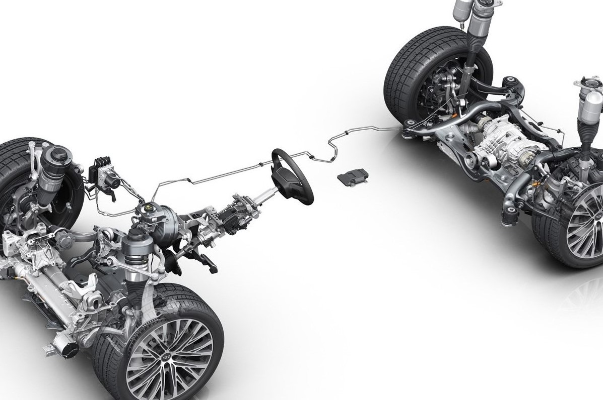
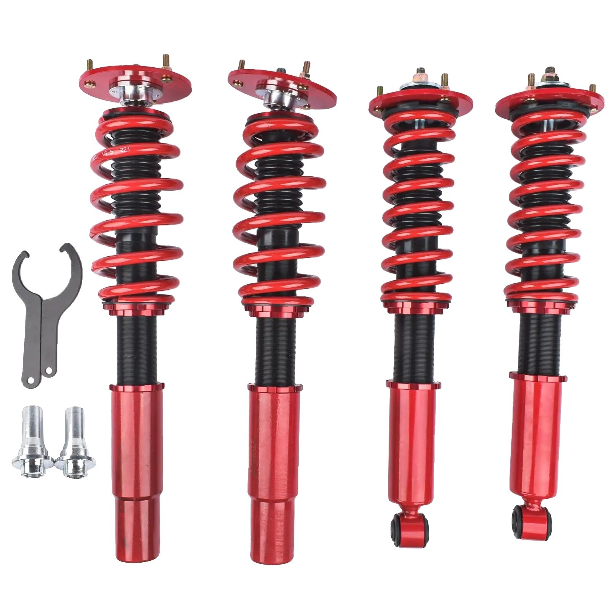
5. Спирачна система
Спирачките са най-важната система за безопасност. Те трябва винаги да бъдат в отлично състояние. Редовно се проверяват дисковете, накладките, апаратите, спирачните маркучи и нивото на спирачната течност. Течността се сменя приблизително на всеки две години, защото с времето поема влага и губи ефективност. При вибрации, свирене, мек педал или удължен спирачен път трябва незабавно да се извърши проверка. За по-мощни модели може да се монтират по-големи дискове и многобутални спирачни апарати.
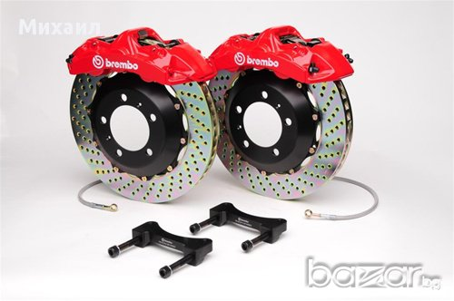
.jfif)
6. Охладителна система
Охладителната система поддържа правилната температура на двигателя. При BMW тя е изключително важна, защото прегряването може да доведе до сериозни повреди. Основните компоненти са радиаторът, водната помпа, термостатът, разширителният съд, маркучите и вентилаторът. При теч, висока температура или често включване на вентилатора трябва да се извърши проверка. Охладителната течност се сменя според препоръките на производителя и винаги трябва да бъде подходяща за BMW.
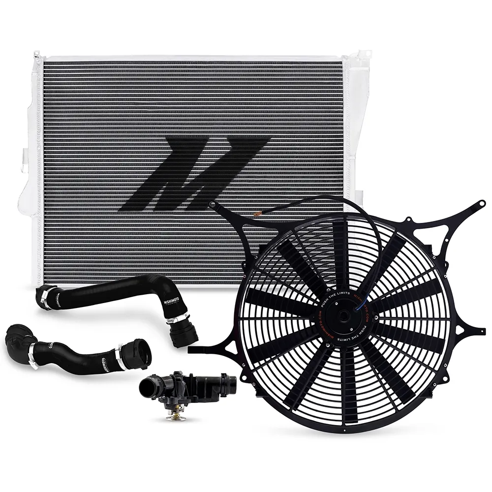
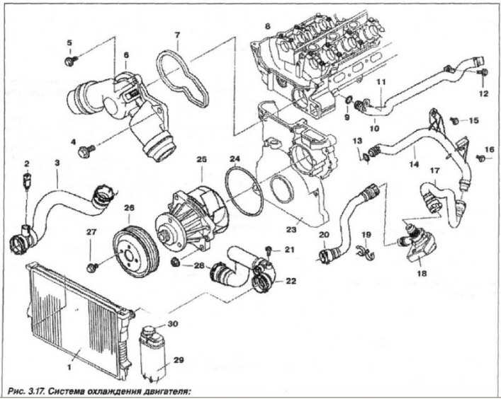
7. Електроника
Съвременните BMW разполагат с десетки електронни модули. Те управляват двигателя, скоростната кутия, ABS, ESP, климатроника, осветлението, парктрониците и други системи. При светнала предупредителна лампа не трябва да се разчита на предположения – необходима е компютърна диагностика. Най-чести проблеми са повредени датчици, слаб акумулатор, неизправен алтернатор, окислени букси или прекъснати кабели. Редовната диагностика позволява откриване на проблеми още преди да станат сериозни.
- ECU, датчиците и модулите
- Акумулаторът, алтернаторът и стартерът
- Диагностиката
8. Интериор
Комфортът е една от силните страни на BMW. Добре поддържаният интериор повишава както удоволствието от шофирането, така и стойността на автомобила. Коженият салон трябва да се почиства и подхранва със специални препарати. Текстилните седалки се почистват периодично. Добре е да се проверяват работата на климатика, отоплението, мултимедията, електрическите стъкла, централното заключване и всички бутони. Подобрения като Android мултимедия, камера за заден ход, Bluetooth, качествено аудио и LED интериорно осветление могат значително да повишат удобството.
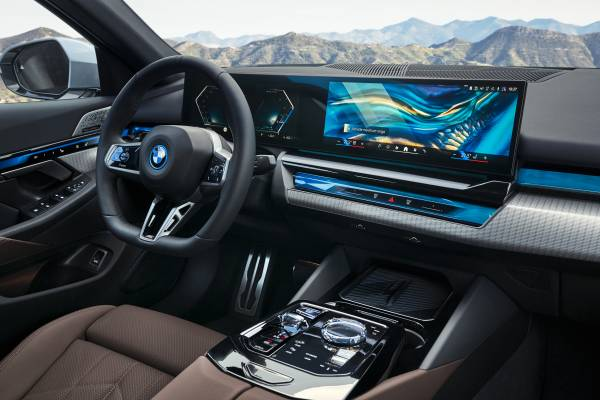
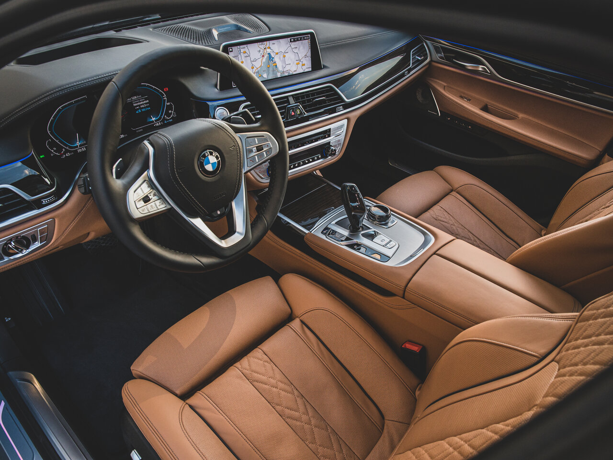
9. Екстериор
Купето трябва да бъде защитено от корозия и атмосферни влияния. Редовното измиване, ваксиране и полиране запазват боята за дълго време. Трябва да се проверяват праговете, калниците, вратите, капака и дъното за наличие на ръжда. Фаровете могат да се полират при помътняване, а гумените уплътнения да се обработват със силиконови препарати, за да не се напукват. Качественото керамично покритие или защитното фолио предпазват боята от надрасквания и ултравиолетови лъчи.
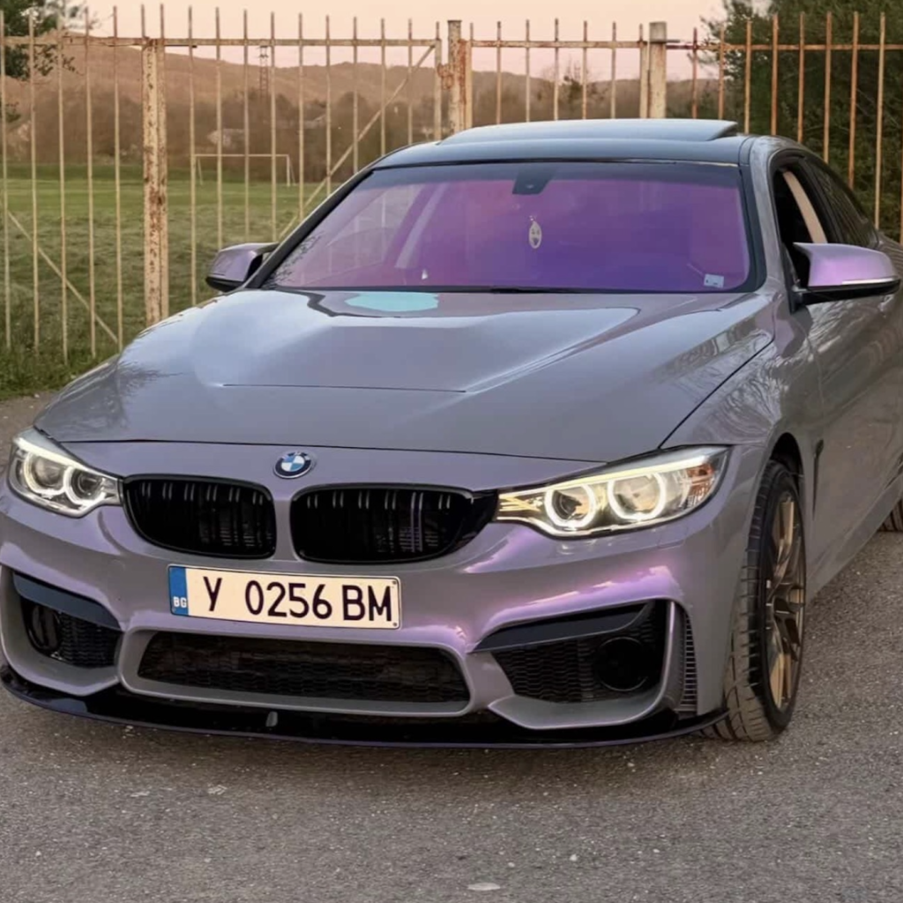
.jfif)
10. Тунинг
Тунингът трябва да започва едва след като автомобилът е напълно технически изправен. Най-разпространените подобрения са спортен въздушен филтър, подобрена изпускателна система, по-голям интеркулер (при турбо двигатели), спортно окачване, по-леки джанти и професионален софтуерен ремап. Важно е всички модификации да бъдат съобразени с възможностите на двигателя и трансмисията. Евтините части и непрофесионалният софтуер често водят до скъпи повреди.
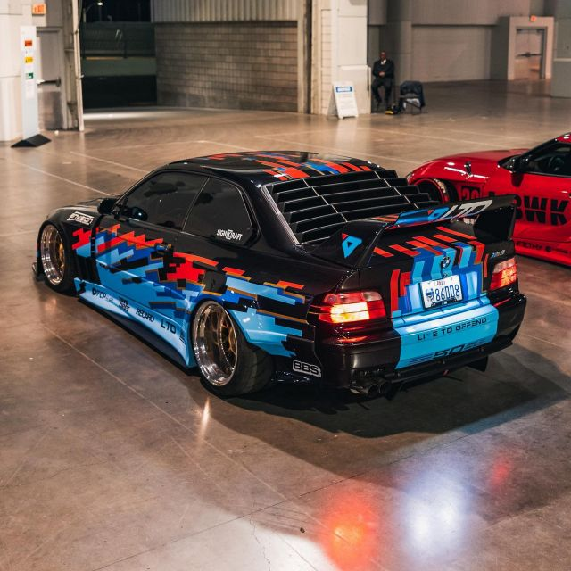
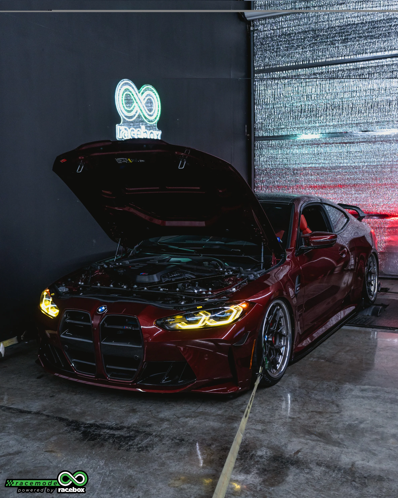
11. Поддръжка и дълготрайност
Правилната поддръжка е ключът към дългия живот на автомобила. Освен редовното обслужване е важно двигателят да се загрява постепенно, без високи обороти веднага след запалване. След по-динамично каране, особено при турбо двигатели, е добре моторът да поработи кратко на празен ход преди изключване. Гумите трябва да се проверяват за налягане и износване, акумулаторът да се следи особено през зимата, а всички течности да се контролират редовно. Добра практика е автомобилът да се диагностицира профилактично поне веднъж годишно. Автомобил, който се обслужва навреме, използва качествени части и се кара разумно, може безпроблемно да измине над 300 000–500 000 километра. Най-важното правило е да не се отлагат малките ремонти – те почти винаги стават по-скъпи, ако бъдат пренебрегнати.